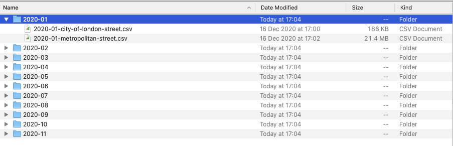

4 Programming (for Statistical Analysis) using R and R-Studio
Welcome to Week 4 in Geocomputation!
Well done on making it through Week 3 - and welcome to our first use and thus introduction to using programming, in the form of R and R-Studio, for data analysis.
This week is heavily practical oriented - with many aspects of your practical integrated at various points in the workshop, as well as of course, a data analysis section towards the end.
As always, we have broken the content into smaller chunks to help you take breaks and come back to it as and when you can over the next week.
Week 4 in Geocomp
This week’s content introduces you to foundational concepts associated with Programming for Statistical Analysis, where we have three areas of work to focus on:
- General Principles of Programming
- How to use R and R-Studio effectively for programmatical statistical analysis
- The ’TidyVerse’Philosophy
This week’s content is split into 4 parts:
- An Introduction to Programming (40 minutes)
- Using R and R-Studio for Data Analysis (40 minutes)
- The TidyVerse Philosophy and Principles (20 minutes)
- Practical 3: Analysing Crime in 2020 - A Statistical Approach (1 hour)
This week, we have a slightly different approach to our workflow structure, with a mixture of short lectures, instructional videos and activities to complete through each part, alongside some Key and Suggested Reading.
This week, you have 2 assignments, which will be highlighted in the workbook.
Part 4 is the main part of analysis for our Practical for this week, but you will find aspects of programming in Parts 1-3 that you will need to do in order to prepare our data for the final part.
If you have been unable to download R-Studio Desktop or cannot access it via Desktop@UCL Anywhere, you will have access to our R-Studio Server website instead. Instructions on how to access this are provided below.
Learning Objectives
By the end of this week, you should be able to:
- Understand the basics of programming and why it is useful for data analysis
- Recognise the differences and purpose of a console command versus the creation of a script
- Explain what a library/package is and how to use them in R/R-Studio
- Explain the TidyVerse philosophy and why it is useful for us as data analysts
- Wrangle and mangle tabular data to prepare it for analysis
- Conduct basic descriptive statistics and simple linear regression using R-Studio and R
We will build on the data analysis we completed last week and look to further understand crime in London by comparing our crime rate statistics to potenital socio-economic variables that might play a factor in crime prevalance.
An Introduction to Programming
Programming is our most fundamental way of interacting with a computer - it was how computers were built and for a long time, the Command Line Interface (CLI) was our primary way of using computers before our Graphical User Interface (GUI) Operating Systems (OS) and software became mainstream.
Nowadays, the majority of us use our computers through clicking - and not typing. However, programming and computer code underpin every single application that we use on our computers… or really any technological device.
After all, programming is used for so many purposes and applications, that, we as users take for granted - from software engineering and application development, to creating websites and managing databases at significant scales.
To help with this diversity of applications, multiple types of programming languages (and ways of using programming languages!) have developed - Wikipedia, for example, has a list of 50 different types of languages, although there is some overlap between many of these and some are used for incredibly niche activties.
In general, the main programming languages that people focus on learning at the moment include:

Figure 4.1: The RStudio interface with a new script.
Some can be used for a range of purposes – others are more specific, e.g. HTML for website building. There are also different ways in which programming languages work, which give some advantages over others.
This is to do with how the code is written and ‘talks to the computer’ - behind our main programming languages there is something called a compiler that takes the code we write in our various programming languages and translates it into machine code, a.k.a. the code our computers know how to understand.
This code is written purely in binary and, as a result, looks a lot different to the code we’ll be writing in our practicals.
For some languages, this translation is completed when your code is compiled before it is run, i.e. the ‘compiler’ will look through all your code, translate and then execute the machine code according.
These languages are known as compiled, or low-level languages and can, at first, be slow to write but are incredibly efficient when executing huge amounts of code (e.g. when creating software). They however require an understanding of things called registers, memory addresses, and call stacks and are as a resut, a lot more complicated (and no, I personally do not know how to code in any low-level languages…nor do I particularly want to!).
For other languages, such as R and Python, these fall into the interpreted language category. Here, each line of code is executed without a pre-runtime translation. In this case, a program called an interpreter reads each program statement and, following the program flow, then decides what to do, and does it.
The issue with these high-level programming languages is that this approach can be costly in computational resources (i.e. processing time and memory space). As there is no pre-run time compilation, bugs are not found before the code is run but instead as the code is run - as a result (and what you might see happen in your own code), your computer can get stuck trying to execute code which is either completely unfeasible for your computer to execute (e.g. your computer cannot handle the size of data you are feeding it) or it ends up in a loop with no way out - except for you stopping the code.
However, the advantage of using these langauges is that their main focus is on things like variables, arrays, objects, complex arithmetic or boolean expressions, subroutines and functions, loops, threads, locks, and other abstract computer science concepts - all of which we’ll use within our module, believe it or not! These languages therefere have a focus on usability over optimal program efficiency, which, when we’re just learning to code, are ideal for us in Geocomputation!
As we’re not taking a CompSci degree here, we won’t go into any more detail about this, but suffice to say, there is more to programming then what we’ll cover in Geocomputation.
But what is important to recognise is that a lot of work went into creating the programming environments that we get to use today - and I, for one, am extremely glad I never had to learn how to write a compiler!
If understanding a little more about compilers and machine code is of interest to you, the below video provides an accessible explanation - although you might want to come back to it at the end of the pratical:
How do computers read code?
The Command Line Interface
The most basic of programming we can use without installing anything on our computers is using the Command Line Interface(CLI) already built in, known as the shell.
The shell is a simple program that lets you interact with your computer using text commands (Command Line Interface) instead of point & click (Graphical User Interface).
The shell simply takes your commands and provides them to the operating system of your computer.
Each operating system has its own shell program: Mac / Linux = zsh (new) / bash (Bourne-again Shell) (previous); Microsoft = PowerShell (and a few others).
For most operating systems, you can access the shell using a simple program, known as a terminal emulator (TE). The default TE for Mac & Linux users is: Terminal.
The default TE for Windows users use Command Prompt (old) or Terminal (new).
(If you remember my introduction lecture, this is how I used to have to interact with my first computer at a very young age of probably 5 when attempting to load a computer game!)
The shell is an incredibly useful program - and if you take programming further in the future (e.g. analysis of big datsets through servers, running multiple scripts, dealing with version control, software engineering), it will become a tool that you’ll become incredibly familiar with.
But for now, we just want to illustrate how cool it can be for us to be able to tell our computer to do things in a few lines of code - rather than having to click and point - particularly once you know how to use and can remember specific commands.
Let’s take a look by completing a simple task with our shells to tell our computer to do something - let’s do some file management for our practical today.
Using the Command Line Interface On Your Computer
As you may remember from last week’s practical, I provided you with our crime data in a single processed csv file. However, when you download the data from data.police.uk, the data is not so nicely formatted!
Essentially, all of our data that we download for crime in London will be provided in individual csvs, according first to month, and then to the police force as so:

To be able process this data easily in R, we want to move all of our files into a single folder. And believe it or not, it only takes a couple of lines of code to do so.
Let’s take a look:
As we’ve seen in the video above, it can really useful - and quick! - to use our Shell to organise our data files prior to loading them in R-Studio.
Just to proove this, the first piece of programming we will do today is use your built-in shell on your computer to repeat the same process and copy our crime data into a single folder.
File Management using the Command Line
Now you’ve watched how I copy the files over, let’s go ahead and do this ourselves.
- Head to data.police.uk and download all available crime data for London in 2020 (this may only include up until November) and for both Police Forces.
You should now have you data downloaded in a single main folder in your downloads.
Copy this folder into your GEOG0030 -> data -> raw -> crime folder.
- Next, open up your shell on your computer.
- On mac, hold CMD and hit space to open up your search bar and type terminal, and a terminal window should appear.
- On windows, press the windows button and do the same. Alternatively search for shell or command prompt.
With your shell open, we will navigate to your raw data folder and copy over the crime data into a single folder.
To do so, we’ll use six main terminal commands:
- pwd (both Mac and Windows): Print Working Directory - this will show us where we are in our computer’s file system. By default, you should be located at the “base” of your user file.
- dir (Windows) or ls (Mac): Lists all files in the directory you are currently located.
- cd (both Mac and Windows): Change into a new directory (i.e. folder) - this can be a single path ‘step’ or several steps to get to the directory you want.
- md (Windows) or mkdir (both Mac and Windows): Make a new directory (i.e. folder) where you are currently located.
- cp (both Mac and Windows): Copy content of a directory or specific file to a new location. This command can take wildcards to help search multiple folders at once, as we’ll see in our query.
- move (Windows) or mv (Mac): Move directory to a new destination.
Let’s get going.
In your shell, type the command
pwdand press return. You should now see a file path appear under your command - the computer is telling you where you are currently located in your computer system.Next, type
dirORls(OS-dependent) and press return. The computer now lists all of the folders in your directory that you can move into as a next step from your current folder. **Identify what folder your GEOG0030 work is contained in*.Next, type
cdfollowed by the folder you next need to change into and then press return. In my case, the command is:cd Code. This will change you into a different folder - and you should this now added into your Prompt.
Keep going changing folders until you are in the folder that contains your downloaded crime data.
A tip is that your terminal can auto-populate your folder names for you when there is enough information for them to determine the unique folder. To do this, press tab on your keyboard.
E.g. your crime folder is likely to be a long list of numbers and letters if you haven’t renamed it whilst copying it over to your raw folder. Therefore using this approach will save you time entering all these numbers.
You can change into this folder in one command, simply keep adding to your folder path as so:
cd GEOG0030/data/raw/crime/52c6b758bceaf2244fc1b6f93e85d7f00f234ccf/and then press return. Note, you do not need a slash at the start of your file paths.Now you are in the correct folder, we first want to make a new folder to contain all the crime csvs (without their current subfolder system):
mkdir all_theftand press return.
If you now type dir or ls, you should now see the new folder listed within your current folder.
Let’s go ahead and copy all of our csvs into this single folder.
- Type
cp **/*.csv all_theftand press return.- This command uses the wildcard * to search for any file in any folder, as long as it has a
.csvfile type. - Using wildcards is a very common programming tool and we are likely to use them in our practicals moving forward. You can also use them in searches on search engines such as Google!
- This command uses the wildcard * to search for any file in any folder, as long as it has a
We can now change into our new folder and then list its contents to check that our files have moved across.
- Type
cd all_theftand press return. Then typedirorls. Check that you have all your files (either 22 or 24, depending on when you are completing this practical!).
Great, we have our files all in a single folder which will make using them in R much easier. We’ll do one final thing - and that is move this folder out of this origina and into the main crime folder.
Still in the terminal, type: (WINDOWS)
move all_theft ..or (MAC):mv all_theft ..Next, type
cd ..and press return.
You should now find yourself one step back in your file system in the main crime folder. We can check that our move worked by again listing the contents of the folder.
- Type
dirorlsand press return. Check that yourall_theftfolder is now listed.
Great! You’ve just done your first bit of command line programming!
Think about how quick was it to type those commands and get the files moved - rather than have to do all of that my hand.
Of course it helped that I told you what commands to write - but the more time you spend with programming, the quicker (and more familiar) you get at (with) coding.
Command Line Paths
Note, the use of .. in our two commands above means to take a step back in your file system path, as we did in both of these cases here (i.e. the ‘parent’ folder.
In addition, two further commands to be aware of include:
~(Mac) to denote the root or home directory, e.g.cd ~. In Windows, there is not really a shortcut for this..: a single full-stop means “this folder”.
The command line is just one aspect of programming - but we also want to have the ability to create and run scripts.
Scripts are incredibily important for us when completing data anlaysis and, as such, we’ll look at the differences between the two as we start to use R/R-Studio for our data analysis today.
One cool thing about the terminal is that we actually have the ability to create and run scripts just within the terminal itself.
We can do this by opening up a text editor in our terminal to write a script in any programming language and then execute our script within the terminal. We execute our script by actually setting the terminal to that programming language and then calling the script. This all sounds extremely complicated - but it really is not.
We can have a quick look here:
Whilst we could…we won’t be using this approach within our work in Geocomptuation - because, quite frankly, the terminal is pretty limited in its display of maps and charts, a key output of our work here in Geocomputation (in fact, we’d need to save our outputs to a file each time to go view them…. anyway less about that).
Instead, what’s great is that we have several different types of software and Integrated Developement Environments that bring the functionality of running scripts together with the visualisation capacity we like in our GIS software.
For us in Geocomputation, our tool of choice for this is R-Studio.
Using R and R-Studio for Data Analysis
Before we go any further, what I want to make clear from the outset of this workshop - and the remainder of the module - is that programming using R and R-Studio is ultimately a tool we will use to complete specific tasks we need to do for our data analysis.
There are a lot of different tools out there that you can use to achieve the same outcomes (as you’ve seen with Q-GIS, and no doubt had experience of using some statistics/spreadsheet software) but we choose to use this tool because it provides us with many advantages over these other tools - more on this next week.
With this tool though, there is a lot to learn about the principles and the theory behind programming languages - but, as evident above, whilst we could look at this in a lot of detail (there is a lot of theory behind programming which we just won’t cover - that’s for computer scientists), we will instead focus on the aspects most important to our use. (We’ll look at this in our main lecture video: Principles of Programming for Data Analysis).
The second thing to make clear is that R and R-Studio are two different things:
R is our programming language, which we need to understand in terms of general principles, syntax and structure.
R-Studio is our Integrated Development Environment, which we need to understand in terms of functionality and workflow.
Integrated Development Environment
An Integrated Development Environment (IDE) is simply a complicated way of saying “a place where I write and build scripts and execute my code. Nowadays, we have some really fancy IDEs that, when they know what language you are coding in, will highlight different types of code accord as well as try to proof-read/be-dubg your code”on-the-fly" before you’ve even run it.
R-Studio is definitely a very fancy IDE - as it offers a lot of functionality beyond just writing scripts and execute code.
As you may know already, R is a free and open-source programming language, that originally was created to focus on statistical analysis.
In conjunction with the development of R as a language, the same community created the R-Studio IDE (or really software now!) to execute this statisitcal programming.
Together, R and R-Studio has grown into an incredibly success partnership of analytical programming language and analysis software - and is widely used for academic research as well as in the commercial sector.
One of R’s great strength is that it is open-source, can be used on all major computer operating systems and is free for anyone to use. It, as a result, has a huge and acitve contributor community which constantly adds functionality to the language and software, making it an incredibly tool for many purposes and applications beyond simply statistical analysis.
Believe it or not, the entire workbook you are reading right now has been created in R-Studio, utilising a mixture of programming languages, including R, HTML, CSS and Markdown.
R-Studio has the flexibility to understand programming languages other than R (including Python!), whilst R can be deployed outside of the R-Studio environment.
However, for us, the partnership works pretty well for what we want to achieve.
How do I use R-Studio?
Unlike traditional statistical analysis programmes you may have used such as ****Microsoft Excel** or even SPSS, within the R-Studio IDE, the user has to type commands to get it to execute tasks such as loading in a data set or performing a calculation.
We primarily do this by building up a script (or similar document, more on this in Week 10), that provides a record of what you have done, whilst also enabling the straightforward repetition of tasks.
We also can use the R Console to execute simple instructions that do not need repeating - such as installing librairies or quickly viewing data (we’ll get to this in a second).
In addition, R, its various graphic-oriented “packages” and R-Studio are capable of making graphs, charts and maps through just a few lines of code (you might notice a Plots window to your right) - which can then be easily modified and tweaked by making slight changes to the script if mistakes are spotted.
Unfortunately, command-line computing can also be off-putting at first. It is easy to make mistakes that are not always obvious to detect and thus debug.
Nevertheless, there are good reasons to stick with R and R-Studio. These include:
It’s broadly intuitive with a strong focus on publishable-quality graphics.
It’s ‘intelligent’ and offers in-built good practice – it tends to stick to statistical conventions and present data in sensible ways.
It’s free, cross-platform, customisable and extendable with a whole swathe of packages/libraries (‘add ons’) including those for discrete choice, multilevel and longitudinal regression, and mapping, spatial statistics, spatial regression, and geostatistics.
It is well respected and used at the world’s largest technology companies (including Google, Microsoft and Facebook, and at hundreds of other companies).
It offers a transferable skill that shows to potential employers experience both of statistics and of computing.
The intention of the practical elements of this week is to provide a thorough introduction to R-Studio to get you started:
- The basic programming principles behind R.
- Loading in data from
csvfiles, filtering and subsetting it into smaller chunks and joining them together. - Calculating a number of statistics for data exploration and checking.
- Creating basic and more complex plots in order to visualise the distributions values within a data set.
What you should remember is that R/R-Studio has a steep learning curve, but the benefits of using it are well worth the effort.
I highly recommend you take your time and think through every piece of code you type in - and also remember to comment your code (we’ll get to this in a bit!) .
The best way to learn R is to take the basic code provided in tutorials and experiment with changing parameters - such as the colour of points in a graph - to really get ‘under the hood’ of the software. Take lots of notes as you go along and if you are getting really frustrated take a break!
This week, we focus solely on using R and R-Studio (from now on, simply denoted as R) for statistical analysis. Next week, we will introduce using R for spatial analysis - but there’s lots to get on with today to understand the fundamental principles of using R (and programming in general).
Accessing R-Studio for Geocomputation
You have two options for using R-Studio in this module.
Using R-Studio Desktop: You should have installed this in Week 1 as per the software installation instructions.
- Using R-Studio Server: To use R-Studio Server, open a web browser and navigate to: https://rstudio.data-science.rc.ucl.ac.uk/
- Log in with your usual UCL username and password.
- You should see the RStudio interface appear.
- If it is the first time you log on to RStudio server you may only see the RStudio interface appear once you have clicked on the start a new session button.
Note
RStudio server will only work with an active VPN connection that links your personal computer into UCL’s network. Students in mainland China may want to use UCL China Connect. Students that use a Mac computer that is running on the latest version of MacOS (MacOS Big Sur), are advised to use Desktop@UCL as the Cisco AnyConnect VPN application may not work. If you are completely unable to access the server (e.g. your browser displays a This site can’t be reached message), it means that your VPN connection is not working correctly. Please ensure that your VPN is working correctly or use Desktop@UCL Anywhere instead.
Go ahead and open R-Studio (Desktop or Server) and we’ll first take a quick tour of the various components of the R-Studio environment interface and how and when to use them:
An Introduction to R-Studio and its interface
As you’ve heard, R-Studio has various windows that you use for different purposes - and you can customise its layout dependent on your preference:
Figure 4.2: Opening a new script in RStudio.
The main windows (panel/pane) to keep focused on for now:
Script window: where we build up and write code, to a) keep a record of our work, b) enable us to repeat and re-run code again, often with different paratmeters.
Console: where we write “one-off” code, such as installing libraries/packages, as well as running quick views or plots of our data.
Files: where our files are stored on our computer system - can help with checking file paths as well as file names, and general file management.
Environment: where our variables are recorded - we can find out a lot about our variables by looking at the Environment window, including data structure, data type(s) and the fields and ‘attributes’ of our variables.
Plots: the outputs of our graphs, charts and maps are shown here.
Help: where you an search for help, e.g. by typing in a function to find out its parameters.
We’ll see how we use these windows as we progress through this tutorial and understand in more detail what we mean by words such as ‘attributes’ (do not get confused here with the Attribute Table for Q-GIS) and data structures.
Programming for Data Analysis
Before we get started with using R-Studio, we first need to take a few steps back and address the bigger learning curve in the room, that is: How do I program?.
As stated earlier, R/R-Studio is just a tool - but to use it, you need to understand how to write code in R effectively and, of course, accurately to get your analysis to work.
This means we need to learn about and understand:
- Syntax
- Structure
- Functions and Libraries/Packages
- Object-Oriented Programming
Here, we provide a short introduction to the basic principles of programming, with a focus on Object Oriented Programming - this is a video you might want to re-watch after completing today’s practical.
Principles of Programming for Data Analysis
In the above lecture, you heard about the different including:
General structure using variables and functions
Importance of data types and data structures
The role of packages in expanding R’s functionality
And a brief introduction to Object-Oriented Programin (OOP) and what classes are
We can put some of these principles into action by testing some of R-Studio’s capability with some quick coding now.
We’ll first start off with using R-Studio’s console to test out some of R’s inbuilt functionality by creating a dummy dataset that we’ll be able to analyse.
The video below provides an overview of the short tutorial with additional explanations, so please watch this either prior to or whilst you complete the following instructions
Analysing a vector, a matrix and a dataframe in R-Studio
In your R-Studio console, you should see a prompt sign - > to the left - this means we’re ready to start writing code (a bit like earlier in the shell).
Note
Anything that appears as red in the command line means it is an error (or a warning) so you will likely need to correct your code. If you see a > on the left it means you can type in your next line, a + means that you haven’t finished the previous line of code. As will become clear, + signs often appear if you don’t close brackets or you did not properly finish your command in a way that R expected.
In your console, go ahead and conduct some quick maths:
- Type in
1234 * 56789into the console.
Once you press return, you should see the answer of 70077626 returned below.
Great.
Rather than using numbers and values, it is often easier to assign numbers (or groups of them) a memorable name for easy reference later. In R terminology this is called creating an object and this object becomes stored as a variable. Let’s try this:
- Type in
our_variable <- "This is our first variable"into the console and execute.
You will see nothing is returned in the console - but if you now check your Environment window, it has now appeared as a new value.
We have just stored our sentence, which is a string object (denoted by a) the use of " " and b) the fact it uses characters), into our computer’s memory, as our first variable.
We do this by using the <- symbol is used to assign the value to the variable name you have given.
R stores these objects as variables in your computer’s RAM so they can be processed quickly. Without saving (we will come onto this below) these variables will be lost if you close R (or it crashes).
Now we have a variable, we can do a few things with it.
- Type in
our_variableinto the console and execute.
You should see our entire sentence returned - and enclosed in "". By entering our variable into the console, we have simply asked R to return our variable to us.
We can also ask R to print our variable to get the same output:
- Type in
print(our_variable)into the console and execute.
We have just used our first function: print.
Using functions, we can also ask R questions about our variable - for example, checking what data type it is (yes, we know it’s a string, but no harm in asking!).
- Type in
typeof(our_variable)into the console and execute.
You should see the answer: “character”. For high-level objects that involve (more complicated) data structures, such as when we load a csv into R as a data frame, we are also able to check what class our object is, as follows:
- Type in
class(our_variable)into the console and execute.
You’ll get the same answer - “character” - because both its class and type are the same (our variable is not exactly complicated).
We can also ask how long our variable is - in this case, as a character, we’ll find out how many different sets of characters (strings) are stored in our variable.
- Type in
length(our_variable)into the console and execute.
You should get the answer 1 - as we only have one set of characters.
We can also ask how long this set of characters is, i.e. ask how long the string contained by our variable is.
- Type in
nchar(our_variable)into the console and execute.
You should get an answer of 26.
Let’s go ahead and test these two functions a little further by creating a new variable:
- Type in
our_second_variable <- c("This is our second variable", "It has two parts to it")into the console and execute.
In this piece of code, we’ve created a new variable using the c function in R, that stands for "combine values into a vector or list.
We’ve provided that function with two sets of strings, using a comma to separate our two strings - all contained within the function’s ().
You should now see a new variable in your Environment window which tells us it’s a) chr: characters, b) contains 2 items, and c) lists those items.
Let’s now try both our length() and nchar() on our new variable and see what the results are.
Did you find a difference?
You should have seen that the length function now returned a 2 and the nchar returned two values of 27 and 22.
There is one final function that we often want to use with our variables when we are first exploring them, which is attributes() - as our variables are very simple, they currently do not have any attributes (you are welcome to type in the code and try) but it is a really useful function, which we’ll come across later on.
For, we’ll now just go for one more set of experimenting with using the console.
First, let’s remove our current variables:
- Type
rm(our_variable, our_second_variable)into the console and execute.
You should now see we no longer have any variables in our window - we just used the rm() function to remove these variables from our environment.
Let’s create two more variables for experimenting with:
Type in
ten <- 10into the console and execute.Type in
twelve <- 12into the console and execute.
We’ve now stored two numbers into our environment. Go ahead and check what class and type these two variables have been stored as: you should see we get slightly different answers to these, with a numeric for class and double for type.
Let’s do some maths with our variables:
- Type in
ten * twelveinto the console and execute.
You should see the output in the console of 120.
Whilst this maths may look trivial, it is, in fact, extremely powerful as it shows how objects can be treated in the same way as the numbers they contain.
- Next, type in
ten * twelve * 8into the console and execute.
You should get an answer of 960. As you can see, we can mix variables with raw values without any problems.
We can also store the output of variable calculations as a new variable and thus create a new object:
Type in
output <- ten * twelve * 8into the console and execute.Ask the computer to return the variable
output. You should see we get the same value as the earlier equation.
Go ahead and remove our current variables. You can check to see if there are any active variables by using the ls() command.
- Type in
lsinto the console and execute.
You should now see we have no active variables.
The objects we created and played with above are very simple: we have stored either simple strings or integers - but the real power of R comes when we can begin to execute functions on objects.
As we heard in our lecture, R accepts four main types of data structures: vectors, matrices, data frames, and lists.
So far, we have dabbled with a single item or a dual item vector - for the latter, we used the c() function to allow us to combine our values into a set or list.
We can use this same function to create and build more complex objects - which we can then use with some specific data manipulation techniques (selection and slicing) as well as common statistical functions.
Let’s try this out using a simple example - the total number of pages and publication dates of the various editions of Geographic Information Systems and Science (GISS):
| Book Edition | Year | Total Number of Pages |
|---|---|---|
| 1st | 2001 | 454 |
| 2nd | 2005 | 517 |
| 3rd | 2011 | 560 |
| 4th | 2015 | 477 |
We will store the above table as data - but let’s see
Vector
A vector is the most common and basic data structure in R and is pretty much the workhorse of R. Technically, vectors can be one of two types:
- Atomic vectors
- Lists
Although the term “vector” most commonly refers to the atomic types and not to lists. Vectors are a collection of elements that are mostly of either character, logical integer or numeric data types.
Let’s create our first official vector, detailing the different total page numbers for GISS:
Let’s check the results.
## [1] 454 517 560 477We can see we have our total number of pages collected together in a single vector. We could if we want, execute some statistical functions on our vector object:
## [1] 502## [1] 497## [1] 454 560We now now the average number of pages the GISS book has contain is 497 pages - truly thrilling stuff, but hopefully an easy example to get onboard with.
But let’s seee how we can build on our vector object by adding in a second vector object that details the relevant years of our book - note, I entered the total number of pages in a specific order to correspond to the dates, as outlined by the table above.
Again, let’s check the results.
## [1] 2001 2005 2011 2015On their own, the two vectors do not mean much - but we can use the same c() function to combine the two together to create a matrix.
Matrix
In R, matrices are simply an extension of the numeric or character vectors. They are not a separate type of object per se but simply a vector that has two dimensions. That is they contain both rows and columns. As with atomic vectors, the elements of a matrix must be of the same data type.
As both our page numbers and our years are integers, we can add them together to create a matrix using the matrix() function:
giss_year_nos <- matrix(c(giss_year, giss_page_no), ncol=2)
# note the inclusion of a new argument to our matrix: ncol=2
#this stands for "number of columns" and we want two.Again, let’s check the results.
## [,1] [,2]
## [1,] 2001 454
## [2,] 2005 517
## [3,] 2011 560
## [4,] 2015 477The thing about matrices - as you might see above - is that, for us, they don’t have a huge amount of use. We do not have - as a result, we tend to primarily use Data Frames in R
Data Frame
A data frame is a very important data type in R. It’s pretty much the de facto data structure for most tabular data and what we use for statistics.
A data frame is a special type of list where every element of the list has same length (i.e. data frame is a “rectangular” list).
Data frames can have additional attributes such as rownames(), which can be useful for annotating data, like subject_id or sample_id. But most of the time they are not used.
Some additional information on data frames:
Usually created by read.csv() and read.table(), i.e. when importing the data into R. Assuming all columns in a data frame are of same type, data frame can be converted to a matrix with data.matrix() (preferred) or as.matrix(). Otherwise type coercion will be enforced and the results may not always be what you expect. Can also create a new data frame with data.frame() function. Find the number of rows and columns with nrow(dat) and ncol(dat), respectively. Rownames are often automatically generated and look like 1, 2, …, n. Consistency in numbering of rownames may not be honored when rows are reshuffled or subset.
Let’s go ahead and create a new data frame to store our matrix
We now have a data frame that we can actually finally view
In your console, type: View(giss_df)
You should now see a table pop-up as a new tab on your script window.
Rename. Mix data frame with vectors
# Create a vector with our new column names
new_names <- c("year", "page_nos")
#Rename
names(giss_df) <- new_namesYou can go and check your data frame again and see the new names.
Can take different data types - we can go ahead and add the edition
# Create a vector with our new column names
edition <- c("1st", "2nd", "3rd", "4th")
#Rename
giss_df$edition <- editionView
We’ve just had a bit of fun playing with the R console and seeing how we can store variables and access information about them. Furthermore, we’ve had a look at the different types of But this really doesn’t offer the functionality that we want for our work - what we really want to start to do is build scripts and add start analysing some data!
Before we leave the console (and to be honest, we won’t exactly leave it behind), we’ll enter one last line of code for now:
. Type in install.packages("tidyverse") into the console and execute.
Now we’re ready to move onto our next section.
Tips
- R is case sensitive so you need to make sure that you capitalise everything correctly if required.
- The spaces between the words don’t matter but the positions of the commas and brackets do. Remember, if you find the prompt,
>, is replaced with a+it is because the command is incomplete. If necessary, hit the escape (esc) key and try again. - It is important to come up with good names for your objects. In the case of the
friends_dobobject we used a underscore_to separate the words. It is good practice to keep the object names as short as posssible so we could have gone forFriendsDoborf_dob. Be aware: you cannot start an object name with a number! - If you press the up arrow in the command line you will be able to edit the previous lines of code you inputted.
Recap
In this section you have:
- Entered your first commands into the R command line interface.
- Created objects in R.
- Created a vector of values (the
friends_dobobject). - Executed some simple R functions.
- Created a data frame (called
friends).
TAKE A BREAK .
Installing and Using Libraries/Packages for Data Analysis
As you will have heard in our lecture, our common Data Analysis languages, including Python and R, have developed large community bases and as a result there are significant amount of help and support resources for those working in data science.
Ultimately for (spatial) data science, it really does not matter which one you learn – but both is even better! To do so, understanding the basic principles of programming, as explained above, really helps.
Beyond help and support, these large community bases havev been essential for expanding the utility of a programming language for specific types of data analysis.
This is because of how programming languages work – they have a core library of commands (also known as functions) to do certain things, e.g. calculate the mean of a dataset.
But to do more specific or specialized analysis, such as create a buffer around a point, a function needs to be written to enable this.
You either need to write the function yourself – or hope that someone else has written it – plus you need to know that there is the supporting functions around it. E.g. your code can “read” your spatial data and know a) its spatial and b) the projection system its in to calculate a distance.
Without this, you won’t be able to run your function or do your analysis.
These community bases have identified these gaps, such as for spatial data reading and analysis, and spent considerable amount of time writing these functions and supporting functions to add to the core library.
These functions often get packaged into an additional library (or can be called a package) that you add to your own core library by installing this library to your computer AND then importing it to your work through your script.
One of the main ‘libraries’ or collection of ‘libraries’ for R-Studio and data analysis is called the TidyVerse. The code you just ran asked R-Studio to fetch and install the tidyverse into your R-Stuiio
One thing to be aware of overwrting - but we’ll come to this a bit later and show you how to avoid this.
The TidyVerse Philosophy and Principles
Over the past weeks a lot of information has come your way, diving deep into the world of Spatial Data Science. However, whilst you are slowly becoming proficient in using spatial data, there in terms of how they are structured and organised.
This is crucial for when you are moving on to working on your own projects where you have to source data yourselves: the vast majority of the data you will find in the public domain (or private domain for that matter) will be what’s becoming colluqially called: dirty data.
With dirty data we mean data that needs some form of pre-processing, cleaning, and linkage before you can use it for your analysis. Think back to the Ward and Borough Population data
In the following, you will learn a consistent way to structure your data in R: tidy data. Tidy data, as formalised by R Wizard Hadley Wickham in his contribution to the Journal of Statistical Software is not only very much at the core of the tidyverse R package, but also of general importance when organising your data. In the words, of the Wizard:
Once you have tidy data and the tidy tools provided by packages in the tidyverse, you will spend much less time munging data from one representation to another, allowing you to spend more time on the analytic questions at hand.
What do tidy data look like?
You can represent the same underlying data in multiple ways. The example below, taken from the the tidyverse package and described in the R for Data Science book, shows that the same data can organised in four different ways.
None of these representations are wrong per se, however, not are equally easy to use. Only Table 1 can be considered as tidy data because it is the only table that adheres to the three rules that make a dataset tidy:
- Each variable must have its own column.
- Each observation must have its own row.
- Each value must have its own cell.
.](images/w4/04_a_tidy_data.png)
Figure 4.3: A visual representation of tidy data by Hadley Wickham.
Fortunately, there are some functions in the tidyr and dplyr packages, both part of the tidyverse that will help us cleaning and preparing our datasets to create a tidy dataset. The most important and useful functions are:
| Package | Function | Use to |
|---|---|---|
| dplyr | select | select columns |
| dplyr | filter | select rows |
| dplyr | mutate | transform or recode variables |
| dplyr | summarise | summarise data |
| dplyr | group by | group data into subgropus for further processing |
| tidyr | pivot_longer | convert data from wide format to long format |
| tidyr | pivot_wider | convert long format dataset to wide format |
The tidyverse package is in fact a collection of packages that are specifically designed for data science tasks. Where in many cases different packages work all slightly differently, all packages of the tidyverse share the underlying design philosophy, grammar, and data structures. The ggplot2 package that you worked with last week is actually one of the core package of the tidyverse. This also means that if you load the tidyverse package through library(tidyverse) you directly have access to all the functions that are part of the ggplot2 package and you do not have to load the ggplot2 package seperately. Because the tidyverse consists of multiple packages, it may take a little while before everything is installed so be patient! For more information on tidyverse, have a look at https://www.tidyverse.org/.
Whilst we’ve used the above code to install , each time we start a new script , we’ll need to load the tidyverse . We are going to show all of this in our next Prcatical, which gets you to analyse crime whilst putting into place everything we’ve been dicussing today.
Once we have tidy data, we can begin Exploratory Data Analysis - which we’ll see in our pratical below.
Practical 3: Analysing Crime in 2020 - A Statistical Approach
Wow, we’ve got through a lot - and barely even started our practical! But We now have our files ready for analysis using R-Studio.
4.0.1
Exploratory Data Analysis and Basic Statistics
Setting Up R-Studio for GEOG0030
In the previous section, R may have seemed fairly labour-intensive. We had to enter all our data manually and each line of code had to be written into the command line. Fortunately this isn’t routinely the case. In RStudio look to the top left corner and you will see a plus symbol, click on it and select R Script.
This should give you a blank document that looks a bit like the command line. The difference is that anything you type here can be saved as a script and re-run at a later date.
Figure 4.4: The RStudio interface with a new script.
When writing a script it is important to keep notes about what each step is doing. To do this the hash (#) symbol is put before any code. This comments out that particular line so that R ignores it when the script is run. Type the following into the scripting window:
Creating a new project
Setting up our script
Setting Up Our Directory
Since we are now reading and writing files it is good practice to tell R what your working directory is. Your working directory is the folder on the computer where you wish to store the data files you are working with. You can create a folder called POLS0008, for example. If you are using RStudio, on the lower right of the screen is a window with a Files tab. If you click on this tab you can then navigate to the folder you wish to use. You can then click on the More button and then Set as Working Directory. You should then see some code similar to the below appear in the command line. It is also possible to type the code in manually.
# set the working directory path to the folder you wish to use
# you may need to create the folder first if it doesn't exist
setwd('~/POLS0008')
# note the single / (\\ will also work)Note
Please ensure that folder names and file names do not contain spaces or special characters such as * . " / \ [ ] : ; | = , < ? > & $ # ! ' { } ( ). Different operating systems and programming languages deal differently with spaces and special characters and as such including these in your folder names and file names can cause many problems and unexpected errors. As an alternative to using white space you can use an underscore _ if you like.
Loading Data
Until now we have generated the data used in the examples above. One of R’s great strengths is its ability to load in data from almost any file format. Comma Separated Value (csv) files are our preferred choice. These ca
print() head() tail()
ncol() nrow() names()
subset $
slice
Recap
In this section you have learnt how to:
- Create an R script.
- Load a
csvinto R, perform some analysis, and write out a newcsvfile to your working directory. - Subset R data frames by name and also column and/or row number.
Learning Objectives
You should now hopefully be able to:
- Understand the basics of programming and why it is useful for data analysis
- Recognise the differences and purpose of a console command versus the creation of a script
- Explain what a library/package is and how to use them in R/R-Studio
- Explain the TidyVerse philosophy and why it is useful for us as data analysts
- Wrangle and mangle tabular data to prepare it for analysis
- Conduct basic descriptive statistics and simple linear regression using R-Studio and R
Acknowledgements
Acknowledgements are made in appropriate sections, but overall this week, as evident, has utilised the Q-GIS documentation extensively.